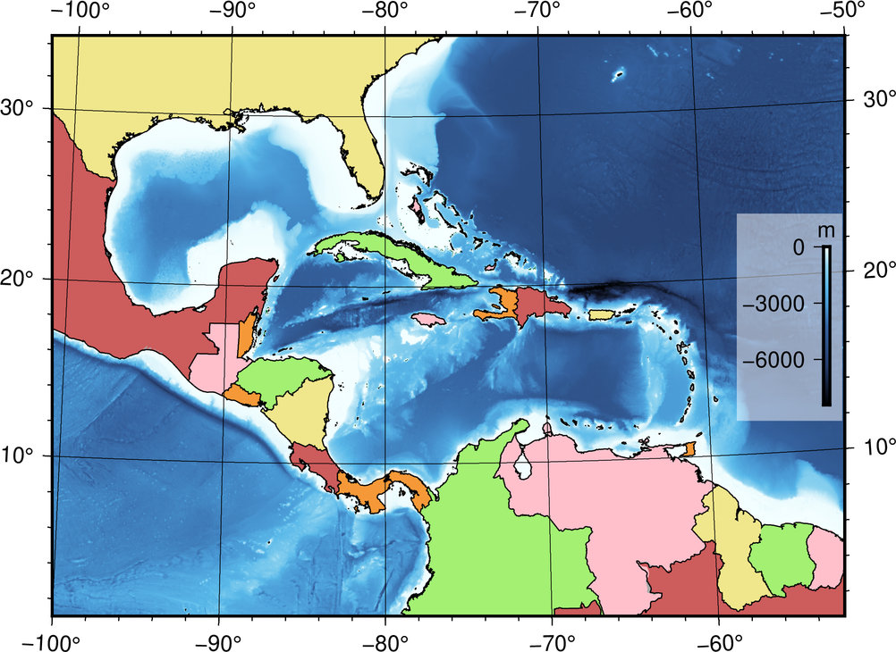
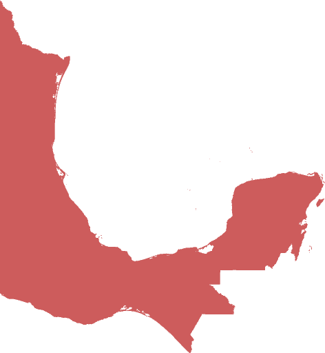
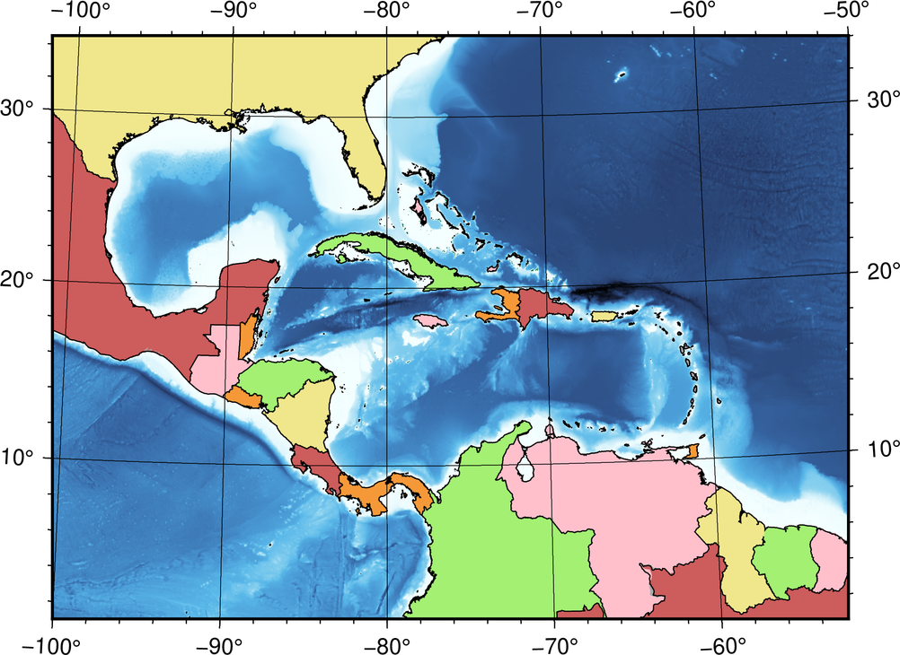

畫筆與調色技巧
Contents
6. 畫筆與調色技巧#
注意
本教學適用於 GMT 6 的現代模式。如須參閱 GMT 6 (傳統模式) 與 GMT 4-5 繪製相似地圖的教程，請至這裡。
為了有效的在地圖上呈現資料，顏色與線條樣式應要謹慎選擇。為地圖挑選合適的配色是門藝術，地圖製作者通常都會花上許多時間，把地圖調整成看起來最調和、最舒服的外觀。這裡我們要介紹如何在 GMT 中操作相關設定，讓你能夠更快的找到心目中的完美配色。本章也會說明如何繪製簡單的色階圖例。
6.1. 目標#
製作一張中美洲的地圖，海域部份為分層設色地形圖，陸域部份則依國家來著色，如下圖所示。被中美地峽與島嶼群圍起來的區域為加勒比海，而左上方的海灣則為墨西哥灣。圖中可以找到此區域的十幾個比較大的國家，也可以發現加勒比海和墨西哥灣，都比東北方的大西洋要淺得多。根據地圖上的海床色階圖例，也可以發現最深的地方位於波多黎各北方的海溝，有大概 8000 多公尺深。
{kind=link}
直接觀看指令稿
6.2. 使用的指令與概念#
coast- 為國家上色grdimage- 繪製著色影像colorbar- 繪製色階條grdinfo- 查閱網格檔的基本資訊外部指令
grep- 在 GMT 的輸出中搜尋字串 (Windows 為findstr) (非必要)如何指定作圖顏色
畫筆的屬性設定
疊加多個圖層
在腳本中使用變數以美化排版
使用錨點指定色階條的繪製位置
6.3. 前置作業#
在本章中，我們一樣會使用 GMT 伺服器提供的 @earth_relief_01m 資料庫。相關的介紹請看「為地形圖上色」。本次的作圖區域，是 -R-100/1/-50/34r，如以下 Google Map 截圖所示。有關 -R 的詳細說明，請參閱「製作第一張地圖」。
6.4. 操作流程#
我們先來分析一下目標的地圖。在此地圖中有很多不同的元素，依照固定的順序疊加。如果認真檢查，這些元素可以分成四群，由底層到頂層分別為
地形圖
國家的著色
海岸線、國家邊界與地圖格線
色階圖例的區塊
因此，我們的 GMT 繪圖腳本，應該也要照如上的順序進行繪圖，也就是說程式碼看起來會長這樣
第一段：海底地形圖 (grdimage)
第二段：國家的著色 (coast)
第三段：所有的線段 (coast)
第四段：色階條 (colorbar)
海底地形圖和國家著色，都必需要指定繪圖的顏色或色階，所以這裡我們先來看看單一的顏色要怎麼指定。最簡單，並也在之前的章節使用的一種方法，就是指定顏色的名稱。GMT 支援了超過百種顏色的名稱，可以在這邊查看並使用。例如說以下指令
gmt coast -Ggreen # ...後續省略
可以把陸域染成綠色。由於這裡我們要著色的是個別的國家，所以得先介紹另外一個 coast 的選項 -E 才行。-E 會讀取一個稱為 DCW 的資料庫，使用內含的國家邊界資料進行著色。-E 的語法大致為
-E代碼1,代碼2,...+g填色+p畫筆
其中的代碼指的是 ISO 3166-1 alpha-2
國家名稱的二位字母代碼，例如 TW 代表台灣，US 代表美國等等。除了可以從維基百科查詢這些代碼以外，也可以輸入以下指令，直接在 GMT 中查詢：
$ gmt coast -E+l # 在螢幕中列出二位字母國碼
# 或
$ gmt coast -E+L # 在螢幕中列出二位字母國碼與幾個大國家的省份碼
這邊順便舉個方便的技巧：如果你想查詢特定國家 (已經知道英文國名) 的代碼，可以使用 sh 內建的 grep 指令來輔助查詢。如下這樣：
$ gmt coast -E+l | grep -i japan
JP Japan
這邊的 -i 選項是「大小寫視為相同」之意。在下方的搜尋結果中，就出現了日本的代碼 JP。
小訣竅
如果你的作業系統是 Windows，內建會沒有
grep，但你可以使用替代的指令findstr來操作，如下：$ gmt coast -E+l | findstr /i japan如果你想要使用
grep一次查詢多個國家，可以使用如下語法：$ gmt coast -E+l | grep -i 'japan\|singapore\|zealand'
這樣程式會一次把日本、新加坡跟紐西蘭的代碼找出來。
接下來就是填色。GMT 實際上支援了六種顏色表達方式，分別為
「green」 # 1. 使用顏色名稱
「255/99/71」 # 2. 使用 R/G/B 值 (從 0 到 255)，左邊這是蕃茄色
「#87CEEE」 # 3. 使用 HTML 標記的顏色表示法 (#RRGGBB，十六進位)，左邊這是天藍色
「25-0.86-0.82」 # 4. 使用 H-S-V 值 (前者從 0 到 255，後兩者從 0 到 1)，左邊這是巧克力色
「8/8/0/2」 # 5. 使用 C/M/Y/K 值 (百分比表示)，左邊這是薰衣草色
「169」 # 6. 灰階號碼，此例相當於 R/G/B 的 169/169/169
你可以使用你喜歡的表達方式給定顏色。這邊我們要試著幫墨西哥 (代碼 MX) 塗上磚紅色，使用 HTML 標記的代碼 #CD5C5C，語法如下：
$ gmt coast -R-100/1/-50/34r -JM15c -EMX+g#CD5C5C -png central_america # 地圖 15 公分寬
成品就會看到有個磚紅色的區塊，這就是墨西哥的國土。
因為我們等一下會為不同的國家塗上不同的顏色，為了程式碼的美觀，可以把顏色和對應的國家先以變數的方式存放，之後執行 coast 再使用這些變數。這種方式除了可以整齊排版，更利於之後的編輯修改。每個 shell 指定變數的方式略有不同，這裡以 bash 為示範，變數的指定與取方式為：
變數名稱='變數內容' # 指定變數
${變數名稱} # 存取變數 (這串文字會被'變數內容'取代掉)
把上述語法套用到我們的例子中，就像是這樣：
color1='#CD5C5C'
colorgroup1='MX,BR,PA,DO'
gmt coast -R-100/1/-50/34r -JM15c -E${colorgroup1}+g${color1} -png central_america
以上腳本可以把墨西哥 (MX)、巴西 (BR)、巴拿馬 (PA) 和多明尼加 (DO) 一次塗上磚紅色。如果你想要更改顏色或國家，只要修改變數 colorgroup1 或 color1 的內容即可，不需要動到 coast 的指令。
小訣竅
由於不同的指令列環境有不同的變數設定方式，而且是值得另闢章節討論的話題，在此我們先略過這些內容以集中精神在 GMT 指令上。有關於變數指定的細節，請參考你所使用的 shell 如 cmd、bash 或 csh 等的技術專書或網頁。
有許多不錯的網頁調色盤，如 HTML color codes，可以幫助你用視覺化的方式挑選你想要的顏色，然後再把色碼貼到腳本變數中就行了。好好尋找你想要的顏色吧！
接下來，只要依樣畫葫蘆，把所有的鄰近國家都填上顏色就可以了。依照上一章所示，我們先使用 grdimage 畫地形底圖，再使用 coast 把剛剛提的所有東西填上去：
# ==== 設定顏色與對應的國家 ====
# mexico, brazil, costa rica, dominican
color1='#CD5C5C'
colorgroup1='MX,BR,CR,DO'
# guatemala, venezuela, jamaica, french guiana, bahamas
color2='pink'
colorgroup2='GT,JM,VE,GF,BS'
# united states, puerto rico, nicaragua, guyana
color3='240/230/140'
colorgroup3='US,PR,NI,GY'
# belize, haiti, trinidad and tobago, panama, salvador
color4='0/36/74/4'
colorgroup4='BZ,HT,TT,PA,SV'
# colombia, cuba, honduras, suriname
color5='97-0.52-0.94'
colorgroup5='CO,CU,HN,SR'
# 其他國家
color0='169'
# ==== 主要指令 ====
gmt begin central_america png
gmt grdimage @earth_relief_01m -JB-80.27/8.58/-8/24/15c -R-100/1/-50/34r -Cgeo
gmt coast -G${color0} \
-E${colorgroup1}+g${color1} \
-E${colorgroup2}+g${color2} \
-E${colorgroup3}+g${color3} \
-E${colorgroup4}+g${color4} \
-E${colorgroup5}+g${color5}
gmt end
注意在 grdimage 中，-J 選項使用了 B，這是另一種稱為 Albers 投影的地圖投影法，是一種圓錐型投影，可使地圖上的每個區域面積保持一致。它的語法為
-JB投影中心經線/投影中心緯線/圓錐上端緯線/圓錐下端緯線/地圖尺寸
另外，在「為地形圖上色」中也提過，地形資料的 -C 選項 (色階) 預設值是 geo。這邊我們為了使讀者了解我們使用的設定，因此特地加上 -Cgeo。實際上，就算不加上色階檔檔名 (-C 或乾脆省略)，GMT 也會使用相同的色階畫圖。在設定顏色與對應的國家的部份，我們總共指定了 6 種顏色與 22 個國家。color0 是灰色，用於中美洲其餘的國家。而在主要指令中，我們先使用 -G 把所有陸域塗上灰色，然後再使用 -E 為各個國家填色。你會發現所有的 -E 選項都可以被加在同一個 coast 指令內，省去重複輸入的麻煩！整個腳本執行的結果如下所示 (中文註解可能要改成英文才可順利執行)。
{kind=link}
接下來，我們再為國界和海岸線畫點線，國家就會更突顯出來。在製作第一張地圖中，我們曾經提及線條的「畫筆樣式」由三個部份組成：粗細,顏色,樣式。粗細 可以為預先定義好的名稱，像是 thinner、thickest，fat等等，總共有 12 個，所有的名稱可以在此連結查詢。如果你想要自訂粗細，也可以使用 c (公分)、i (英吋)、p (點) 等長度單位，如 0.1c 就是 0.1 公分。畫筆的顏色與上述的色碼通用，選你喜歡的表達方式即可。畫筆的樣式預設是連續線條，你可以使用 - (折線) 與 . (點) 自由的混搭樣式，如 -.. 會畫出折線中間間隔兩個點的線條。以下是一些示範：
thinner,green,- # 綠色的細折線 (0.5 點)
3p,100/0/100,. # 3 點寬，深紫色的點線
1c,#555555,--.. # 1 公分寬，灰色的 "--.." 樣式線條
coast 有三個跟畫線有關的指令，分別為
-I編號/畫筆 # 畫上河流
-N編號/畫筆 # 畫上政治邊界
-W編號/畫筆 # 畫上水域邊界
其中 -I 和 -N 的編號已在為地形圖上色中介紹過，而 -W 的編號可以為 1、2、3 及 4，分別代表海岸線、湖岸線、湖中島岸線、湖中島中湖岸線。這裡我們就再使用一次 coast 把海岸線和國界線用 thinner 等級的線條來畫畫看，順便再使用 -Bafg 畫上地圖邊框及格線：
# (前略)
# ==== 主要指令 ====
gmt begin central_america png
gmt grdimage @earth_relief_01m -JB-80.27/8.58/-8/24/15c -R-100/1/-50/34r -Cgeo
gmt coast -G${color0} \
-E${colorgroup1}+g${color1} \
-E${colorgroup2}+g${color2} \
-E${colorgroup3}+g${color3} \
-E${colorgroup4}+g${color4} \
-E${colorgroup5}+g${color5}
gmt coast -W1/thinner -N1/thinner -Di -Bafg
gmt end
這次的成品看起來就像這樣：
{kind=link}
備註
不知道你有沒有發現換了投影方法的同時，邊框的形式也會跟著變化？有關邊框進一步的設定，請參閱版面設計與地圖的幾何布局。
為了清楚的表示海床的深度，最後我們要來加上色階圖例，顯示不同深度對應的顏色。在 GMT 6 中用來畫色階條與色階圖例的指令是 colorbar (在之前的版本中稱為 psscale)。colorbar 的基本語法為：
gmt colorbar -D[位置與尺寸] -B[格線、座標間距、標題等資訊]
colorbar 提供了設定 -D 的許多不同方法，這裡我們要使用最簡單的一種：
-Dj[錨點位置]+w[色階條長度]
-Dj 會使色階圖例被畫在地圖內部的九宮格錨點中的任一個位置。GMT 使用 6 個字母來指定錨點的相對位置，分別是 L (左側)、C (水平中央)、R (右側)、T (上方)、M (垂直中央)、B (下方)。前三個字母中挑一個加上後三個字母中挑一個，就能得到錨點的位置與相對應的組合：
LT CT RT
LM CM RM
LB CB RB
如果我們想要在圖的中央右側畫上長度為 3 公分的色階圖例，只要這麼寫就行了：
-DjRM+w3c
下一個 -B 選項基本上和 coast 的 -B 選項方法相同。不過因為色階條的顏色只沿著一維方向變化，我們必須要分開調整 x 軸和 y 軸的設定：
-Bx[格線與刻度 (afg 設定)]+l[擺在刻度一側的標籤] -By+l[擺在色階條一端的標籤]
這裡我們試著使用 -Bx3000 (afg 三種設定都是每隔 3000 單位繪製一次) 以及 -By+lm (在色階條一端寫上 m 這個字)。我們沒有要在有刻度的一側擺上任何標籤，所以在 -Bx 中的 +l 可以省略。把 colorbar 指令擺在 coast 後面，就能確保它被畫在地圖的頂層：
# (前略)
# ==== 主要指令 ====
gmt begin central_america png
gmt grdimage @earth_relief_01m -JB-80.27/8.58/-8/24/15c -R-100/1/-50/34r -Cgeo
gmt coast -G${color0} \
-E${colorgroup1}+g${color1} \
-E${colorgroup2}+g${color2} \
-E${colorgroup3}+g${color3} \
-E${colorgroup4}+g${color4} \
-E${colorgroup5}+g${color5}
gmt coast -W1/thinner -N1/thinner -Di -Bafg
gmt colorbar -DjRM+w3c -Bx3000 -By+lm
gmt end
{kind=link}
到目前為止，我們的地圖幾乎已經完成了。剩下的工作，就是讓色階圖例更顯眼，更易判讀。由於色階圖例直接畫在深色的海床上會看不清楚，我們可以在圖例下方填上一層帶有透明度的白色，讓黑色的數字和線條浮現出來。colorbar 的填色指令為：
-F+g[顏色]
如要指定透明度，只要在顏色後方加上 @[透明度%] 就行了。@100 是完全透明 (等於沒有畫)，而 @0 是完全不透明 (等於不加透明度時的填色)。這邊我們使用 -F+gwhite@50 來達成我們的目標。另外，由於陸域的地形被國家填色給蓋掉了，導致色階圖例的上半部 (0 至 5000 公尺) 是無用的資訊。為了省略此段的內容，我們可以使用 -G 選項來指定繪製圖例時使用的色階範圍。語法為
-G[最小值]/[最大值]
最大值 可以設定為海平面 (0)，那最小值呢？別忘了我們可以使用 grdinfo 來查閱網格檔的基本資訊，只是這次要加上查詢的地理範圍 (-R)：
$ gmt grdinfo @earth_relief_01m -R-100/1/-50/34r
# (前略)
/home/whyj/.gmt/server/earth_relief_01m.grd: x_min: -100 x_max: -50 x_inc: 0.0166666666667 (1 min) name: longitude n_columns: 3001
/home/whyj/.gmt/server/earth_relief_01m.grd: y_min: 1 y_max: 34 y_inc: 0.0166666666667 (1 min) name: latitude n_rows: 1981
/home/whyj/.gmt/server/earth_relief_01m.grd: z_min: -8434 z_max: 5310 name: elevation (m)
# (後略)
注意 z_min 的值，就是在搜尋區域中最低的像素值。因此，最小值 使用 -8434 就可以了。完整的選項設定為 -G-8434/0。把 -G 和 -F 的設定都加進 colorbar 指令內，就完成了本章地圖所有的要求。
備註
colorbar預設繪製在腳本中最後一次使用的色階，在本例中為geo。如果你要使用colorbar繪製不同的色階條，必須使用-C[色階名]來指定色階進行繪圖。本章示範的是最基本的色階條繪製方法，如須查閱更多進階的技巧，請參閱色階檔的編修與呈現。
6.5. 指令稿#
本地圖的最終指令稿如下：
# ==== 設定顏色與對應的國家 ====
# mexico, brazil, costa rica, dominican
color1='#CD5C5C'
colorgroup1='MX,BR,CR,DO'
# guatemala, venezuela, jamaica, french guiana, bahamas
color2='pink'
colorgroup2='GT,JM,VE,GF,BS'
# united states, puerto rico, nicaragua, guyana
color3='240/230/140'
colorgroup3='US,PR,NI,GY'
# belize, haiti, trinidad and tobago, panama, salvador
color4='0/36/74/4'
colorgroup4='BZ,HT,TT,PA,SV'
# colombia, cuba, honduras, suriname
color5='97-0.52-0.94'
colorgroup5='CO,CU,HN,SR'
# 其他國家
color0='169'
# ==== 主要指令 ====
gmt begin central_america_gmt6 png
gmt grdimage @earth_relief_01m -JB-80.27/8.58/-8/24/15c -R-100/1/-50/34r -Cgeo # 底圖
gmt coast -G${color0} \
-E${colorgroup1}+g${color1} \
-E${colorgroup2}+g${color2} \
-E${colorgroup3}+g${color3} \
-E${colorgroup4}+g${color4} \
-E${colorgroup5}+g${color5} # 國家上色
gmt coast -W1/thinner -N1/thinner -Di -Bafg # 國界與海岸線
gmt colorbar -DjRM+w3c -G-8434/0 -Bx3000 -By+lm -F+gwhite@50 # 色階條
gmt end
備註
「繪製國界與海床地形圖：以 100W - 50W，1N - 34N 為邊界，Albers 圓錐投影，地圖橫向寬 15 公分。國家使用 6 種不同的顏色著色，為國界和海岸線加上黑色細線條，海底地形使用 @earth_relief_01m 資料並以 geo 為色階。最後在地圖的右側畫上 3 公分長的色階圖例，每隔 3000 公尺標示海床的深度，色階圖例背景使用透明白來填色。」
觀看最終版地圖
6.6. PyGMT 指令稿#
使用 PyGMT，可以如下腳本繪製本地圖：
import pygmt
# ==== 設定顏色與對應的國家 ====
# 這裡我們利用了 Python 的 Dictionary 資料結構來縮短程式碼！
color_dict = {'MX,BR,CR,DO': '#CD5C5C', # mexico, brazil, costa rica, dominican
'GT,JM,VE,GF,BS': 'pink', # guatemala, venezuela, jamaica, french guiana, bahamas
'US,PR,NI,GY': '240/230/140', # united states, puerto rico, nicaragua, guyana
'BZ,HT,TT,PA,SV': '0/36/74/4', # belize, haiti, trinidad and tobago, panama, salvador
'CO,CU,HN,SR': '97-0.52-0.94'} # colombia, cuba, honduras, suriname
color0 = '169' # 其他國家
dcw_list = [key + '+g' + value for key, value in color_dict.items()]
# ==== 取得地形資料 ====
region = [-100, -50, 1, 34]
grid = pygmt.datasets.load_earth_relief(resolution='05m', region=region)
# ==== 繪圖 ====
fig = pygmt.Figure()
fig.grdimage(grid, region=region, projection='B-80.27/8.58/-8/24/15c', cmap='geo')
fig.coast(land=color0, dcw=dcw_list)
fig.coast(shorelines='1/thinner', borders='1/thinner', resolution='i', frame='afg')
# 注意這裡我們在色階條的位置字串中加上了 +o1c/0，稍微偏移其位置。
fig.colorbar(position='jRM+w3c+o1c/0', truncate=[-8000, 0], frame=['x3000', 'y+lm'], box='+gwhite@50')
fig.show()
fig.savefig('central_america_pygmt.png')
你可以使用以下的 Binder 連結嘗試此程式碼：
6.7. 習題#
仿造此章節的地圖，畫出南海 (South China Sea) 的海底地形與週邊國家圖。座標可使用
95E 至 123E，以及0N 至 26N。可使用本章節的顏色或自行調整你愛的搭配。有沒有辦法把香港與海南島塗上與中國不同的顏色？